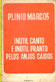
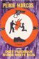
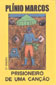
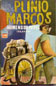
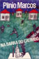
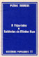
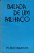
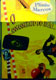
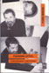
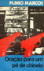

Publicados
Capas do acervo
Toque numa capa para ampliar.
 Navalha na CarneTeatro · 1968 · Ed. Senzala
Navalha na CarneTeatro · 1968 · Ed. Senzala Quando as Máquinas ParamTeatro · 1971 · Ed. Obelisco
Quando as Máquinas ParamTeatro · 1971 · Ed. Obelisco Histórias das Quebradas do MundaréuContos · 1973 · Ed. Nórdica
Histórias das Quebradas do MundaréuContos · 1973 · Ed. Nórdica O Abajur LilásTeatro · 1975 · Ed. Brasiliense
O Abajur LilásTeatro · 1975 · Ed. Brasiliense Querô, Uma Reportagem MalditaRomance · 1976 · Prêmio APCA
Querô, Uma Reportagem MalditaRomance · 1976 · Prêmio APCA
Inútil Canto e Inútil Pranto pelos Anjos CaídosContos · 1977 · Ed. Lampião
Dois Perdidos numa Noite SujaTeatro · 1978 · Ed. Global Jesus-HomemTeatro · 1981
Jesus-HomemTeatro · 1981
Prisioneiro de uma CançãoContos autobiográficos · 1982
Homens de Papel e BarrelaTeatro · 1984
Na Barra do CatimbóRomance · Ed. do Autor Madame BlavatskyTeatro · 1985
Madame BlavatskyTeatro · 1985
A Figurinha e Soldados da Minha RuaRelatos · 1986
Balada de um PalhaçoTeatro · 1986 Canções e Reflexões de um PalhaçoTextos curtos · 1987
Canções e Reflexões de um PalhaçoTextos curtos · 1987 A Mancha RoxaTeatro · 1988
A Mancha RoxaTeatro · 1988 Teatro MalditoTeatro · 1992 · Ed. Maltese
Teatro MalditoTeatro · 1992 · Ed. Maltese
O Assassinato do Anão do Caralho GrandeNoveleta / peça · 1996 · Geração Editorial
Figurinha DifícilRelatos · 1996 · Ed. Senac Na Trilha dos SaltimbancosConto · Ed. do Autor
Na Trilha dos SaltimbancosConto · Ed. do Autor
Oração para um Pé-de-ChineloTeatro · Ed. do Autor Coleção Melhor Teatro2003 · Ed. Global
Coleção Melhor Teatro2003 · Ed. GlobalNo mundo
Traduções
- Deux Paumés dans une Nuit Pourrie (Dois Perdidos numa Noite Suja), tradução e adaptação de Jacques Thieriot, 1974
- Le Rasoir sur la Gorge (Navalha na Carne), tradução e adaptação de Jacques Thieriot, 1974
- Zwei Verlorene in Einer Schmutzigen Nacht (Dois Perdidos), tradução de Henry Thorau, Henschelverlag, Berlim, DDR, 1985
- Two Lost in the Filthy Night, tradução de Elzbieta Szoka, 1988, em Three Contemporary Brazilian Plays, Host Publications, Austin, edição bilíngue
- Dos Perdidos en una Noche Sucia, tradução de Ileana Diéguez Caballero, em Teatro Brasileño Contemporáneo, Havana, Cuba, 1990
- Deux Perdus dans une Nuit Sale, tradução de Ângela Leite-Lopes, 1998, Ministério da Cultura / Funarte
- Two Lost Souls on a Dirty Night, tradução de Henrik Carbonnier, montagem de André Pink, Londres, 2000
Fortuna crítica
Algumas pesquisas
- Plinio Marcos: Reporter of Bad Time, Peter Schoenbach, em Dramatists in Revolt, University of Texas Press, 1976
- Plínio Marcos: O Discurso da Violência, Izidoro Blikstein, Revista Contexto nº 5, 1978
- Antônio Mercado, tese de doutorado sobre a obra teatral, Universidade de Yale, EUA, 1980
- O Teatro Brasileiro Moderno, Décio de Almeida Prado, Ed. Perspectiva, 1988
- Plínio Marcos, a Flor e o Mal, ensaio de Paulo Vieira, 1994, Editora Firmo
- A Semiotic Study of Three Plays by Plinio Marcos, Elzbieta Szoka, Peter Lang Publishing, 1995
- A Desova da Serpente, Mário Guidarini; o bem e o mal em Plínio e Nélson Rodrigues; UFSC, 1997
- Moderna Dramaturgia Brasileira, Sábato Magaldi, Ed. Perspectiva, 1998
- Os Marginais do Palco, Sábato Magaldi, D.O. Cultura, 2000; em Depois do Espetáculo, 2003
- A Crônica dos que Não Têm Voz, org. Javier Contreras, Fred Maia e Vinícius Pinheiro, Boitempo, 2002